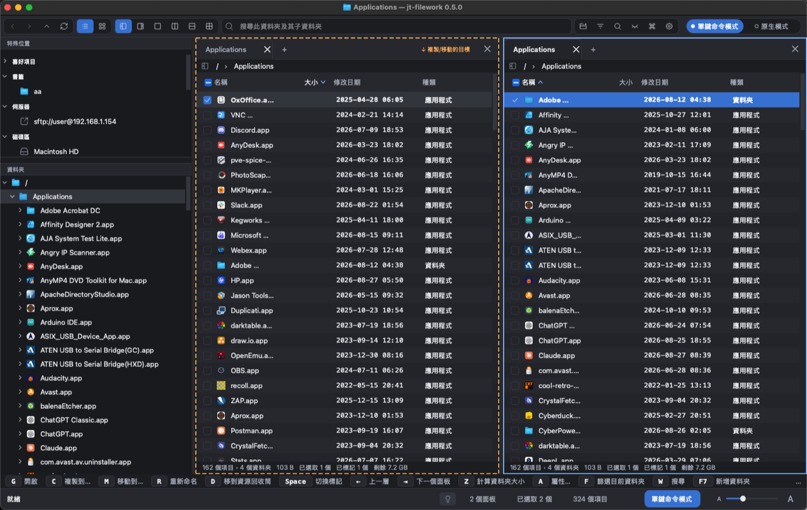

One letter, one action.
A file workspace you drive entirely from the keyboard — one letter, one action, no modifier to hold. Recursive pane splitting, independent tabs in every pane, real previews, archives you can browse, and remote folders over SFTP.
一個字母，一個動作。
完全用鍵盤操作的檔案工作區——一個字母、一個動作，不必按住任何組合鍵。 可遞迴分割的面板、每個面板各自獨立的分頁、真正的預覽、可以瀏覽的壓縮檔，以及透過 SFTP 的遠端資料夾。
0.6.0 — running on macOS (Apple Silicon) and
Windows (x64); Linux builds from source. 545 tests pass.
0.6.0 — 已在 macOS（Apple Silicon）與
Windows（x64）執行，Linux 可從原始碼建置。545 個測試通過。

What it does
它做得到的事
Everything here is built and working, not planned. The full specification lists every feature, every format and every limit, with the numbers.
以下每一項都已完成並可用，不是規劃。 完整規格裡列出每一項功能、每一種格式、每一道上限，連數字一起。
Panes that split as deep as you like
要多深就多深的分割
A recursive split tree, not two fixed panes. Every pane owns independent tabs, and a tab can be torn off into its own window.
遞迴分割樹，不是固定的兩個面板。每個面板擁有自己的分頁，分頁也能拉出來 變成獨立視窗。
Selection is the mark
選取就是標記
They used to be separate concepts. Keeping them apart meant Shift-selecting six files and finding none of them ticked, so now they are one thing.
這兩件事原本是分開的。分開的結果是：用 Shift 選了六個檔案，卻一個都沒被 勾起來——所以現在它們是同一件事。
Compare two folders
比較兩個資料夾
Only here, only there, different, identical. Subfolders optional. Compared by size and modification time — a rule printed under the table rather than implied.
只在這邊、只在那邊、不同、相同。子資料夾可選。依大小與修改時間比對——這 條規則印在表格下方，而不是讓人自己假設。
Where the space went
空間到哪裡去了
One walk, two answers: which child folder holds the most, and which kind of file adds up to the most. The second is the half most tools cannot answer.
一次走訪、兩個答案：哪個子資料夾佔最多，以及哪一類檔案加起來 最多。後者是多數工具回答不了的那一半。
Remote folders
遠端資料夾
SFTP with the host key checked and remembered. A password is held in memory for the process lifetime, dropped on disconnect, and never written to disk.
SFTP，會檢查並記住主機金鑰。密碼只保留在記憶體中直到行程結束，斷線即 丟棄，永不寫入磁碟。
Nothing blocks the window
視窗不會被卡住
Listing, searching, measuring, comparing, extracting — all on worker threads, all with a running count and a Cancel that works.
列目錄、搜尋、計算、比較、解壓——全部在背景執行緒上，都有即時計數與真的 有效的取消。
Archives and disc images
壓縮檔與映像檔
Press Enter on any of these and it opens like a folder, with the same single keys inside: Space marks, C extracts what is marked, X extracts everything.
在任何一種上按 Enter 都會像資料夾一樣打開，裡面用的是同一組單鍵： Space 標記、C 解出已標記的、X 全部解出。
| Format | 格式 | Browse | 瀏覽 | Extract | 解壓 | Create | 建立 |
|---|---|---|---|---|---|---|---|
| ZIP | ✓ | ✓ | ✓ | ||||
.tar, .tar.gz, .tgz | ✓ | ✓ | ✓ | ||||
.tar.bz2, .tar.xz | ✓ | ✓ | — | ||||
.gz, .bz2, .xz | ✓ | ✓ | — | ||||
| ISO 9660 (Joliet, Rock Ridge) | ✓ | ✓ | — |
Every reader treats its input as hostile.
A member whose name would land outside the folder you chose is refused and
reported — never written, never silently renamed — however it is spelled:
../, an absolute path, a Windows drive letter, a UNC prefix, backslashes on any
platform. Expansion is bounded against bytes that actually arrive, not against what a header
claims, because a lying header is what a decompression bomb is.
每個讀取器都把輸入當成有敵意的。名稱會落
在你所選資料夾之外的成員一律拒絕並回報——絕不寫入、絕不悄悄改名——不論它怎麼拼：
../、絕對路徑、Windows 磁碟機代號、UNC 前綴、任何平台上的反斜線。展開量的上限是對照
實際讀到的位元組，不是對照標頭宣稱的數字，因為會說謊的標頭正是解壓炸彈的本體。
.7z and
.rar are not supported — and are not labelled as archives this build can open.
.7z 與
.rar 不支援——而且不會被標示成本版本打得開的壓縮檔。
The keyboard
鍵盤
Two profiles, both data files rather than code. A binding is a line in a text file, so changing one needs no rebuild.
兩套設定檔，都是資料檔而不是程式碼。一個綁定就是文字檔裡的一行。 改一個綁定不需要重新編譯。
A second profile follows the operating system's own conventions — the shortcuts every other application on that machine uses — for when muscle memory says ⌘C.
另一套設定檔用的是 作業系統原生的操作鍵——那台機器上每個程式都在用的那一套——給肌肉記憶說 ⌘C 的時候。
Download
下載
Packaged installers are not published yet. Until they are, the build instructions below produce the same application — this section is here so it is obvious which is which when they arrive, rather than a link that quietly 404s.
打包好的安裝檔尚未發佈。在那之前，下面的建置說明會產出同一個 程式——這一區先擺著，是為了之後放上來時一目了然，而不是先給一個會 404 的連結。
macOS
Apple Silicon. A .dmg holding jt-filework.app.
Apple Silicon。內含 jt-filework.app 的 .dmg。
Not published yet
尚未提供
Windows
x64. An .msi installer, or a portable .exe.
x64。.msi 安裝檔，或免安裝的 .exe。
Not published yet
尚未提供
Linux
x86-64, built on Ubuntu 22.04 so it runs on 22.04 and later.
x86-64，在 Ubuntu 22.04 上建置，所以 22.04 以後都能跑。
Not published yet
尚未提供
Building
建置
Rust 1.98 (pinned by rust-toolchain.toml) and Qt 6.
Build output goes outside the source tree.
Rust 1.98（由 rust-toolchain.toml 釘住）與 Qt 6。
建置輸出放在原始碼樹之外。
macOS
brew install qt cmake
./src/ui/qt6/build.sh releaseLinux
sudo apt install build-essential cmake ninja-build pkg-config \
qt6-base-dev qt6-svg-dev libgl1-mesa-dev
./src/ui/qt6/build.sh releaseBuild on the oldest distribution you intend to support: glibc's compatibility runs one way, so a binary built on Ubuntu 22.04 runs on 24.04 and not the reverse. Following the desktop's light/dark setting while running needs Qt 6.5 or newer; on 22.04's Qt 6.2 the theme is read once at launch.
請在你打算支援的最舊發行版上建置：glibc 的相容性是單向的， Ubuntu 22.04 編出來的可以在 24.04 上跑，反過來不行。執行中跟隨桌面深淺色設定需要 Qt 6.5 以上；22.04 的 Qt 6.2 只在啟動時判斷一次。
Windows
MSVC Build Tools, CMake, Qt 6 and
NASM — aws-lc-sys, which arrives through the SFTP stack,
assembles its own primitives. The full runbook is in
docs/DEVELOPMENT_ENVIRONMENT.md.
MSVC Build Tools、CMake、Qt 6 與
NASM——aws-lc-sys 經由 SFTP 的相依進來，它在 Windows 上要自己
組譯。完整步驟見 docs/DEVELOPMENT_ENVIRONMENT.md。
Not built yet
尚未完成
Named here rather than left to be discovered.
明講出來，而不是留給人自己踩到。
- SFTP writes — upload, download, rename and delete on the server.
.7zand.rar.- Quick Look, “reveal in file manager”, eject and external editor on Windows and Linux. There is no system equivalent, so those commands are hidden rather than offered and inert.
- Running a typed command over every marked file.
- SFTP 的寫入——上傳、下載、在伺服器上重新命名與刪除。
.7z與.rar。- Windows 與 Linux 上的快速查看、「在檔案管理器中顯示」、退出磁碟、外部編輯器。那些平台沒有 對等的系統機制，所以是隱藏這些指令，而不是提供按了沒反應的東西。
- 對所有已標記的檔案執行自訂命令。